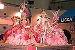
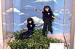
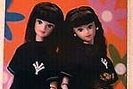
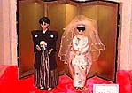

So much for Sylvanians. Next, I'd like to introduce Jenny & Rika, who are very much a favorite among Sylvanian fans. （Are you watching, Masae Mama?)
When I went to the Takara booth, there was a huge crowd and I could see how popular it was. I am not familiar with Jenny or Rika-chan at all, so I only took pictures of the ones that looked a little unusual. (Sorry if this made you frustrated...)
This one seems to be from a time when there were exchanges with France (sorry for the lack of explanation). There were many French-related Rica-chan on display, along with introductions to magazines and newspapers.


This is Jenny from PUFFY. PUFFY is expanding into China, and now they are entering the world of dolls as well. I wonder if they are going to sell this?

This is Yumi Katsura's Bridal Jenny. It was not for sale, so I snapped this picture. It is a kimono, but from the head up it looks like a wedding dress. Well, anything is possible, I guess.
We also visited the TOMY booth, which exhibited many "Pocket Monsters" goods that are scheduled to be re-aired on TV, and the Bandai booth, where "Tamagotchi" was very popular last year and "Hyper Yo-Yo" is popular now. It was so crowded that it was hard to believe that it was a business meeting day, and I guess it will be crowded on the open day. But I think it's worth it for toy lovers.
If you want to see more, please visit the '98 Tokyo Toy Show page, where you can watch live coverage of the show and the popular booths using Java. (It's like a picture-story show.)